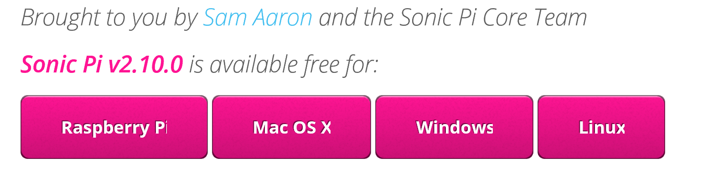
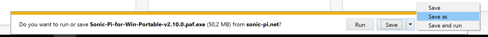
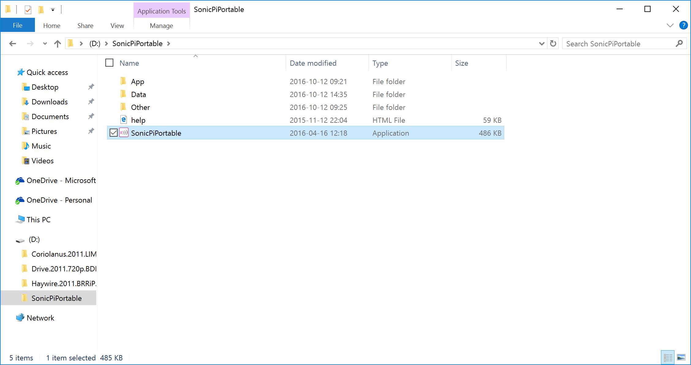
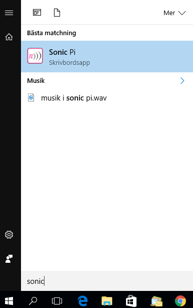

Sonic Pi är ett programmeringsspråk där du kan programmera musik!
Mycket musik skapas idag digitalt med datorer, men det är inte så många som programmerar musik, utan de använder färdiga program för att sätta ihop och skapa nya ljud. Sam Aaron skapade Sonic Pi för att han tycker att musik och programmering passar väldigt bra ihop. När du programmerar i Sonic Pi hör du direkt det som du kodar – på så sätt kan du lära dig programmera samtidigt som du skapar musik.
Sonic Pi är helt gratis och finns till Windows, Mac OS X, Linux och Raspberry Pi. Det här är en instruktion för hur du laddar ned och installerar Sonic Pi till Windows.
Gå till Sonic Pi:s hemsida.
Skrolla ned och hitta menyn för nedladdning. Klicka på knappen för det operativsystem som din dator kör. I vårt exempel klickar du på Windows.



Klicka på Next. Då körs installationen av programmet.
Testa att starta programmet! Skriv "Sonic Pi" i Windows sökfönster och starta programmet genom att dubbelklicka på ikonen.

Grattis, nu har du Sonic Pi på din dator och kan börja programmera musik. Hur du gör det får du veta i nästa uppgift!